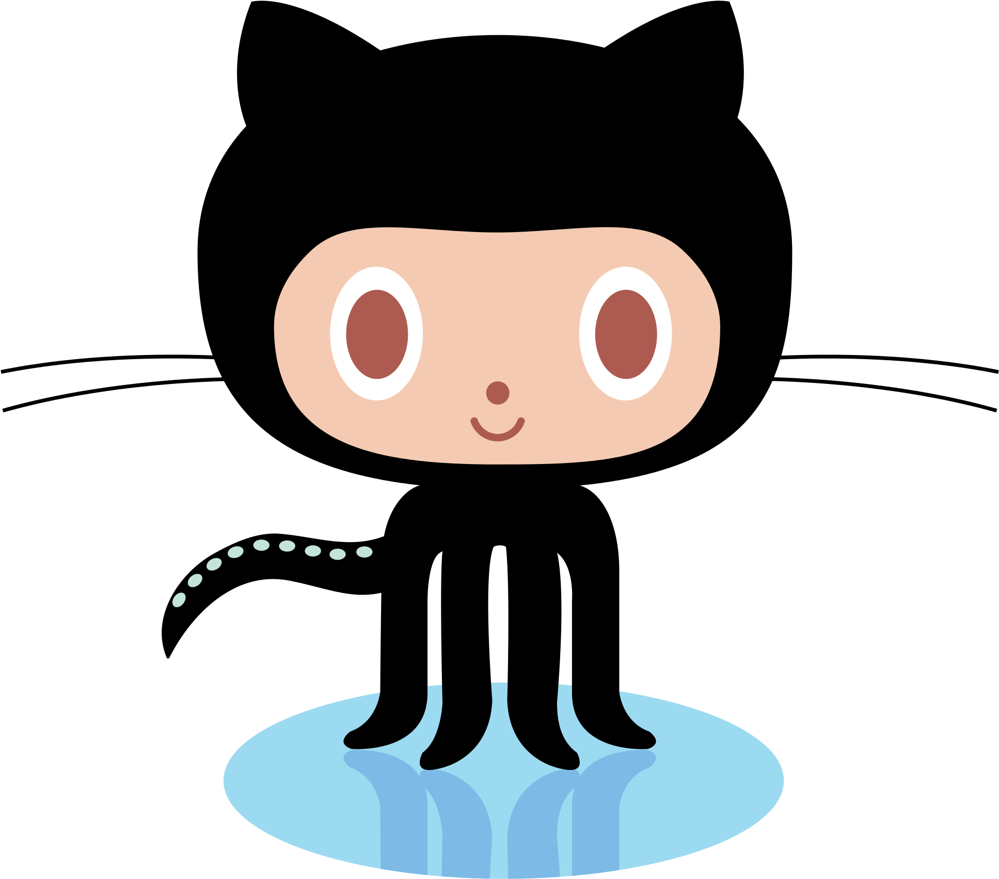

All About Github

- Q. What is a version control system?
A. In software engineering, version control is a class of systems responsible for managing changes to computer programs, documents, large web sites, or other collections of information.
- Q. What is Git?
A. Git is a distributed version control system that tracks changes in any set of computer files, usually used for coordinating work among programmers who are collaboratively developing source code during software development.
- Q. What is Github?
A. GitHub, Inc. is a platform and cloud-based service for software development and version control using Git, allowing developers to store and manage their code.
- Q. What is the difference between Git and Github?
A. Git is a revision control system, a tool to manage your source code history. GitHub is a hosting service for Git repositories.
- Q. Who started Github and how was it started?
A. GitHub was founded by Tom Preston-Werner, Chris Wanstrath, and PJ Hyett. GitHub introduced a novel approach by combining Git, a distributed version control system created by Linus Torvalds, with a web-based platform that provided features like easy collaboration, code review, issue tracking, and more.
- Q. What company owns it now?
- Q. How much does a Github account cost?
A. A Github account is free
- Q. What is the octocat?
A. The Octocat is the mascot of GitHub, a popular web-based platform for version control and collaboration on software development projects.
Git/Gihub Terms:
- Repository: Repositories in GIT contain a collection of files of various different versions of a Project. These files are imported from the repository into the local server of the user for further updations and modifications in the content of the file.
- Commit: Git is a distributed revision control system with an emphasis on speed, data integrity, and support for distributed, non-linear workflows.
- Fork: Forking a repository means creating a copy of the repo. When you fork a repo, you create your own copy of the repo on your GitHub account.
- Push: Using the git push command, you can upload your files available on your local machine to the remote repository.
- Pull Requests: Pull requests let you tell others about changes you've pushed to a branch in a repository on GitHub.
- Workflows: A workflow is a configurable automated process that will run one or more jobs. Workflows are defined by a YAML file checked in to your repository and will run when triggered by an event in your repository, or they can be triggered manually, or at a defined schedule.
- Issues: Issues let you track your work on GitHub, where development happens. When you mention an issue in another issue or pull request, the issue's timeline reflects the cross-reference so that you can keep track of related work.
- Raw Button: The Raw button, like the name suggests, opens the file in a raw form, meaning that any HTML formatting disappears.
- Blame Button: The git blame command displays the details of the author who last modified or added each line of code in a given file along with the commit id of modification.
|